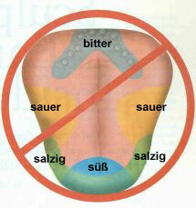

Der Geschmacksinn ist eine wichtige Sinnesmodalität, den wir nach dem System Bardons im WWA genauso ausbilden müssen, wie jeden anderen Sinneskanal. Leider wurde uns in der Schule eine Geschmackszonen Karte der Zunge vorgestellt, die vollkommen unrichtig ist. Jeder Bardon Schüler sollte wissen, dass diese Geschmackszonen-Karte falsch ist, damit er sich bei seinen Geschmacks-Sinneskonzentrationen nicht auf falsche Voraussetzungen stützt.In diesem Zusammenhang möchte ich auf die Zusammenfassung neuester Forschungsergebnisse auf diesem Gebiet im (englischen) Scientific American, März 2001, Seite 26 von David V. Smith und Robert F Margolskee hinweisen.
 Überholte "Geschmackzonen-Karte" : wurde immer wieder in Biologie Lehrbücher für die Unterstufe eingebaut, obwohl es sich um eine Fehldeutung von Forschungsergebnissen des 19. Jahrhunderts (um. 1880) handelt.
Ein häufiger Fehler in vielen Lehrbüchern ist die immer wieder reproduzierte Geschmackszonen-Karte, die große Areale mit spezifischen Unterschieden der Sensitivität im Geschmack bezüglich einzelner Geschmackseindrücke wie süß, salzig, sauer und bitter anführt. Diese Karte gibt an, dass "süß" von den Geschmacksknospen der Zungenspitze, "sauer" an den Zungenrändern, "bitter" hinten auf der Zunge und "salzig" an den Zungenrändern wahrgenommen wird.Geschmacks-Forscher wissen schon seit vielen Jahren, dass diese Geschmacks-Zonen-Karte falsch ist. Sie entstand zu Beginn des 20. Jahrhunderts als Ergebnis einer falschen Interpretation von Forschungsergebnissen aus der Zeit vor der Jahrhundertwende und es scheint fast unmöglich, sie wieder aus der Literatur zu tilgen. In Wirklichkeit sind alle Geschmacksqualitäten gleichmäßig auf der ganzen Zunge wahrnehmbar. Zum gegenwärtigen Zeitpunkt gibt es keinerlei Hinweis auf ein räumliche Unterschiede in der Sensitivität bezüglich der einzelnen Geschmackrichtungen auf der Zunge.
David V. Smith and Robert F Margolskee, Scientific American, März 2001.

This page hosted by  Get your own Free Home Page
Get your own Free Home Page